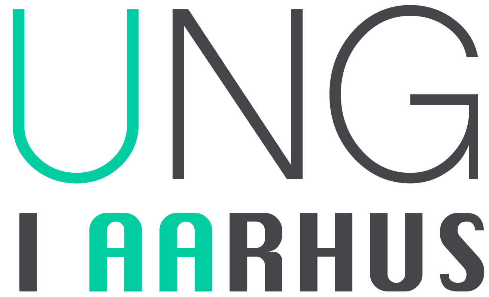

Case 1.2: Online magasin
Ung i Aarhus
Gå til Ung i Aarhus
Refleksion
Case 1.2 var den anden af de 3 store cases, men også den første case som foregik som et individuelt projekt. Opgave i forbindelse med case 1.2 lød på, at vi skulle skabe et online magasin, som henvender sig til unge studerende. Case 1.2 er i forhold til case 1.1 lagt på et langt højere niveau, især fordi vi på dette tidspunkt har mere dybdegående viden omkring forskellige fremgangsmetoder i de forskellige fag. Det ses blandt andet i, at vi i denne case ikke blot skulle udvikle en hjemmeside, men også fremstille en synopsis, som går i dybden med de fremgangsmetoder, samt de tanker der gjort omkring de forskellige valg der blev truffet under arbejdet.
Design Case 1.2
Denne case gav os muligheden for, for første gang, at sammensætte od udarbejde alle de forskellige former for designprocessor, som er en del af det at producere et website. Det betyder, at denne case var den første, hvor kravene til design var blevet hævet op til en fuld dokumentation af vores designproces. Her skulle vi dokumentere fremgangen med designet i form af mockups, skitser, moodboards og logoproces. En af de vigtigste ting i case 1.2, var for mig, at kunne se, at ens evner inden for det at designe et website havde flyttet sig, og i forhold til case 1, var der uden tvivl sket forandringer. I case 1.2, blev der brugt længere tid på at finde en god designkomposition, farvesammensætninger, billeder og især placering af elementer, alt sammen ting, som i case 1.1 ikke var nært så fremtrædende, men hvor der nærmere ”bare” blev produceret en hjemmeside i ”fri hånd”. I case 1.2, opstod der dog nogle komplikationer i forhold til design, i og med, at der blev brugt for lang tid på at producere hjemmesiden, som medførte, at en stor del af design arbejdet ikke blev udført grundigt nok, eller endda slet ikke blev udført, da der var lagt for stort fokus på selve kodningen.
Interaktion case 1.2
I case 1.2 var der stort fokus på interaktionsdelen, da det var vores første store individuelle projekt. For mig var det vigtig at vise hvad jeg havde lært indtil videre på første semester, men ligeså vigtigt var det, at jeg selv kunne se fremgangen i mine evner inden for faget. Her var det første gang jeg selv sad med en stor interaktionsopgave foran mig, og jeg ville gerne lave noget, som var udfordrende for at teste mig selv. Herunder var der elementer på min hjemmeside, som vi kun havde lært en smule om, blandt andet, forsøgte jeg mig for første gang med flexbox og javascript. Resultatet af case 1.2, synes jeg, viser tydelige fremskridt
i forhold til case 1.1. Hjemmesiden i case 1.2 er mere kompleks, der er flere elementer, men også et langt højere ambitionsniveau som følge af de mere omfangsrige evner indenfor interaktionsfaget. Som nævnt tidligere medførte ambitionsniveauet for kodningen af hjemmesiden, at der endte med at være en del mangler i forhold til designprocessen. På trods af det, blev hjemmesiden udført som jeg ønskede den.
Kommunikation og virksomhed case 1.2
Case 1.2 var den første case, hvor faget kommunikation især kom i spil, netop fordi der skulle producere et online magasin til en specifik målgruppe. Med andre ord skulle denne case’ indhold overvejes nøje, og dermed skulle leveringen af hjemmesidens indhold også overvejes, og bearbejdes på en måde, så det fænger hos de unge. I case 1.2 var det første gang, hvor man virkelig kunne mærke den tværfaglige del af uddannelsen, og få en idé om hvordan de forskellige fag arbejder sammen med hinanden. Indtil dette har der været langt større fokus på design og interaktion, og dermed har man ikke på samme måde kunne visualisere, hvad kommunikationsdelen rent faktisk betyder for det store hele. Det gode ved kommunikation og virksomhed er, at det uden tvivl er ud fra de fag man begynder at tænke på hvordan man ønsker sin side skal designes, fordi kommunikation og virksomhed går i dybden med målgruppe, men i den grad også afsender. Det vil sige, hvis man ønsker et godt og passende design til sin hjemmeside, så er det essentielt at anvende kommunikation og virksomheds metoder, til at analysere og frembringe vigtig empiri og viden omkring kunden og afsenderen. I case 1.2 var det primært kommunikation som spillede hovedrollen af de to fag, da magasinet skulle forestille virksomheden, som skal henvende sig til det unge segment, og dermed er virksomhedens hjemmesidedesign baseret på målgruppen.
Konklusion for case 1.2
Case 1.2 var den første opgave, hvor man kunne visualisere sin personlige fremgang indenfor fagene, og produktet der blev produceret i forbindelse med denne case, var på trods af nogle få mangler, herunder manglende designproces, samt en smule SEO-optimering, et meget veludført produkt, da jeg synes det gav et godt indblik i min personlige fremgang indenfor fagene, herunder især interaktion. Fremgangen indenfor interaktion, gør det også nemmere at designe, da det åbner op for flere muligheder, samt langt mere komplekse muligheder. Herunder var især flexboks og javascript store forandringer, som gave nogle tydelige forbedringer på hjemmesidens elementer kontra hjemmesiden fra case 1.1.